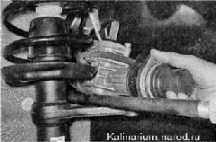

Рулевой механизм - снятие и установкаДля выполнения работы потребуется помощник. Снятие 1. Отсоединяем наконечники рулевых тяг от рычагов стоек передней подвески. Во избежание повреждения контактного кольца на автомобилях с подушкой безопасности в рулевой колонке зафиксируйте рулевой вал от вращения. 2. Отсоединяем промежуточный вал рулевой колонки от вала рулевого механизма. 3. Отворачиваем четыре гайки и снимаем две скобы правого крепления рулевого механизма к перегородке моторного отсека. 4. Немного сдвигаем рулевой механизм вперед и выводим вал приводной шестерни из отверстия перегородки моторного отсека. 5. Повернув рулевой механизм валом верх, извлекаем его из моторного отсека через проем в левом брызговике. Установка Устанавливаем рулевой механизм в обратной последовательности. Подсоединяем промежуточный вал рулевой колонки к валу рулевого механизма. |